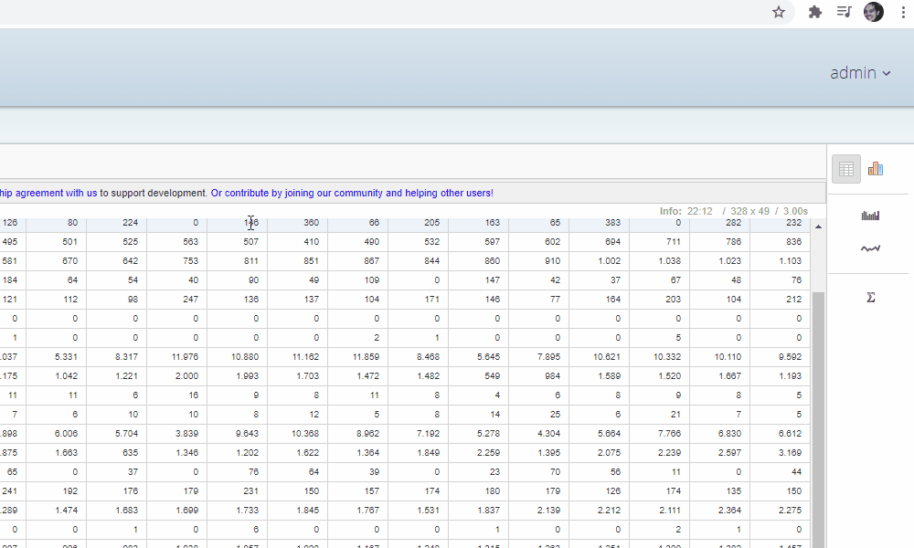

Pentaho Saiku Sidekicks
Quick Start
About
This extension intent is to provide a set of features to improve productivity working with Pentaho Business Intelligence.
Please, visit the extension web site to rate the extension, ask for support and to suggest new features!
Features
- Heat maps
Using Saiku Analytics plug-in, sometimes you need to analyze the reports in a heat map perspective. Heat maps allow insights of data giving visual cues about how data varies, where anomalies or highest/lowest values are concentrated.
This plugin adds heat map feature to Saiku reports inside Pentaho. Just by right-clicking the report, you can produce a heat map for each row, for each columns or even the entire table.
- Copy report to clipboard
The easiest way to copy the entire report to the clipboard so it can be pasted anywhere (e.g. Microsoft Excel).
- Number formatting
Sometimes you may want to visualize or copy numbers with different decimal places or even digit separators, and the extensions gives the ability to choose different locale-independent number formatting.